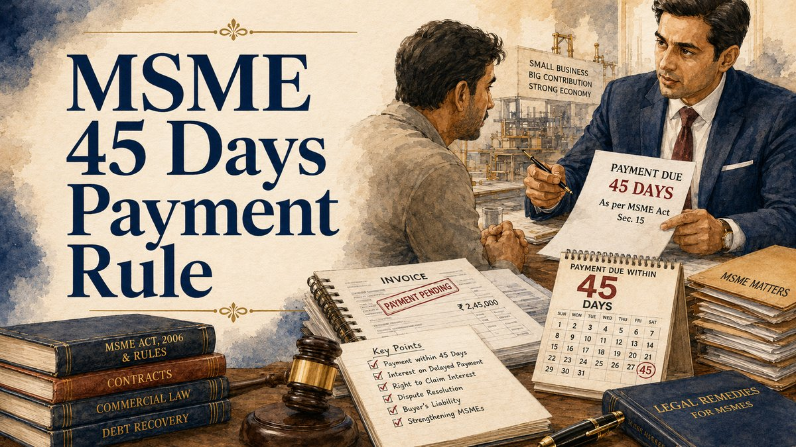

Last updated: June 2026.

In MSME delayed-payment matters, suppliers often focus on whether payment became due within the agreed period or within the statutory delayed-payment framework applicable to micro and small enterprises. The practical analysis starts with the supplier status, invoice terms, acceptance of goods or services, payment due date and communications between the parties.
The 45-day issue should not be treated in isolation. A proper review usually requires checking Udyam registration, the date of supply, the invoice, purchase order, delivery proof, correspondence, ledger entries and whether the buyer raised any genuine dispute about quality, quantity, delay or reconciliation.
For practical preparation, identify whether the transaction involved goods, services or both, whether the buyer accepted delivery, whether any written payment period was agreed and whether part-payments or acknowledgements were made after the due date.
Supplier Status
- Udyam registration certificate.
- Business constitution documents.
- GST details, if relevant.
- Records showing MSME status for the transaction period.
Transaction Record
- Purchase order, work order or written acceptance.
- Invoices with dates and amounts.
- Delivery challans, completion proof or service records.
- Ledger and invoice-wise outstanding summary.
Payment And Dispute Trail
- Bank statements and part-payment record.
- Email, WhatsApp or letter reminders.
- Buyer objections, debit notes or reconciliation messages.
- Legal notice, reply or settlement communication.
Buyers may respond by alleging defective goods, incomplete services, delayed delivery, set-off, debit notes, reconciliation differences, absence of purchase orders, lack of acceptance, or prior settlement. These objections should be arranged invoice-wise and date-wise before deciding the next step.
A supplier-side claim is usually stronger when the record clearly shows supply, acceptance, due date, reminders, admissions, part-payment or absence of timely dispute. A buyer-side response is usually assessed by checking whether objections were raised contemporaneously and whether the documents support those objections.
Before approaching the MSME Facilitation Council or responding to a delayed-payment claim, prepare an invoice-wise table showing invoice number, date, amount, delivery date, due date, part-payment, outstanding amount, reminders and buyer response.
Also keep a short chronology. The chronology should identify the purchase order, supply, invoice, payment reminders, objections, notice, filing or pending forum details. This helps assess jurisdiction, limitation, interest exposure, settlement scope and enforcement strategy.
If the buyer relies on reconciliation or set-off, preserve the ledger, debit notes, credit notes, email trail and meeting minutes showing how the outstanding amount was calculated. A clean calculation sheet often decides whether the first discussion remains productive.
Avoid treating every unpaid commercial invoice as a ready MSME delayed-payment claim without checking Udyam status, transaction dates, buyer acceptance, contractual dispute clauses and forum history.
Also avoid submitting only a lump-sum outstanding figure. Invoice-wise tables, delivery proof and buyer-response records make the enquiry easier to review and reduce avoidable follow-up questions.
A useful first enquiry may include business name, Udyam status, buyer name, invoice-wise outstanding amount, invoice dates, payment due dates, delivery proof, buyer objections and whether any MSEFC, arbitration or court proceeding is already pending.
Related resources: MSME disputes practice page, MSME recovery lawyer in Patna, MSME recovery lawyer in Bihar, MSME documents checklist, and the case enquiry guide.
References / Sources
- Micro, Small and Medium Enterprises Development Act, 2006.
- Udyam records, invoice documents, delivery proof, buyer communications and MSEFC procedure should be checked with the transaction record.
Share the Udyam record, invoice-wise outstanding table, purchase orders, delivery proof, payment trail and buyer objections for a structured first review.
Start Case Enquiry